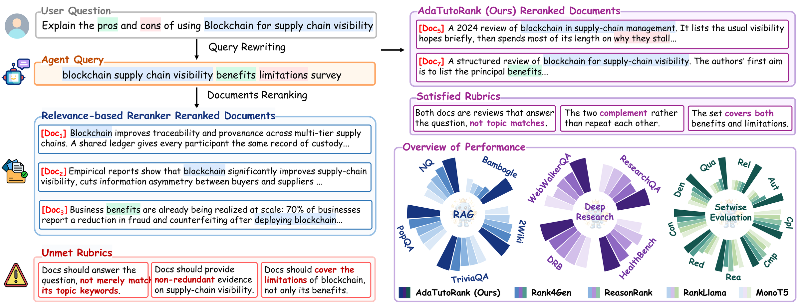
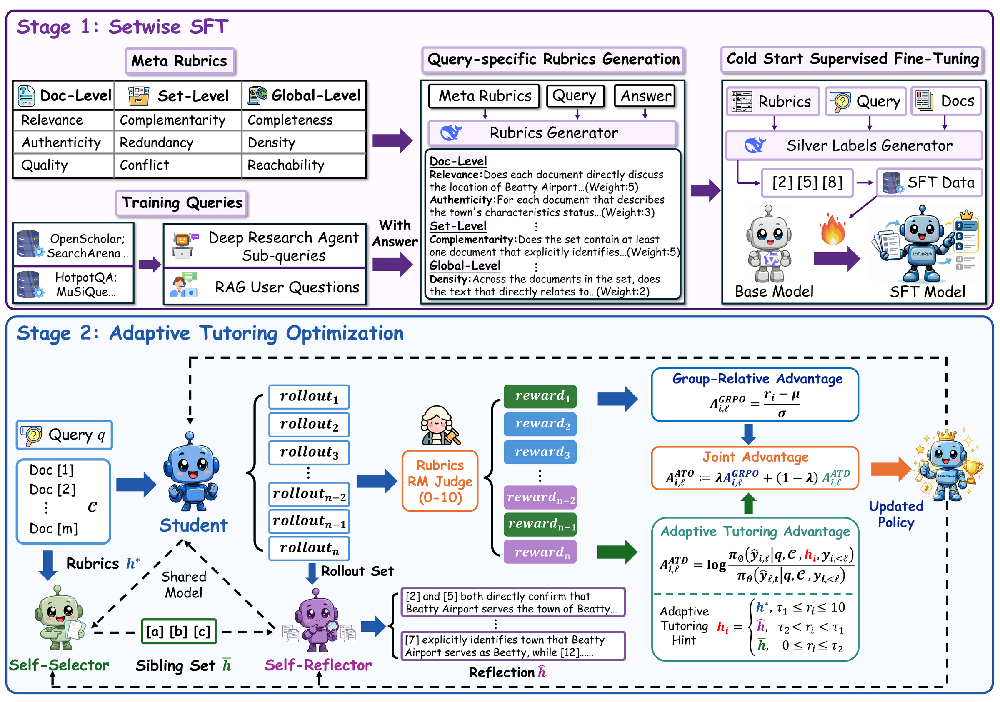
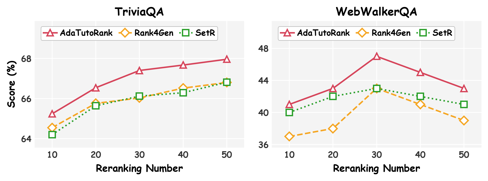
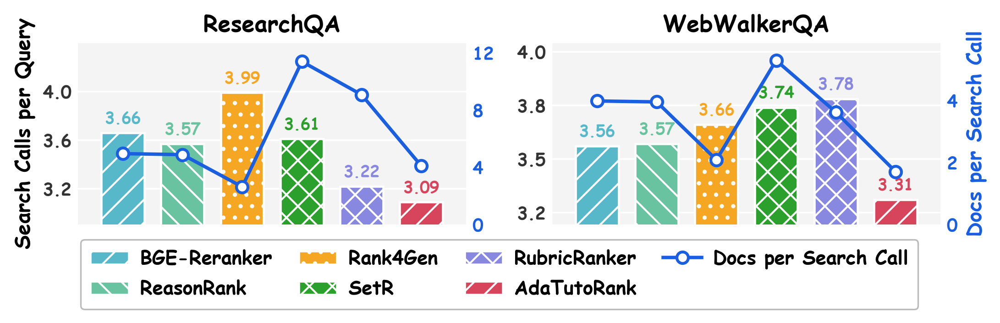
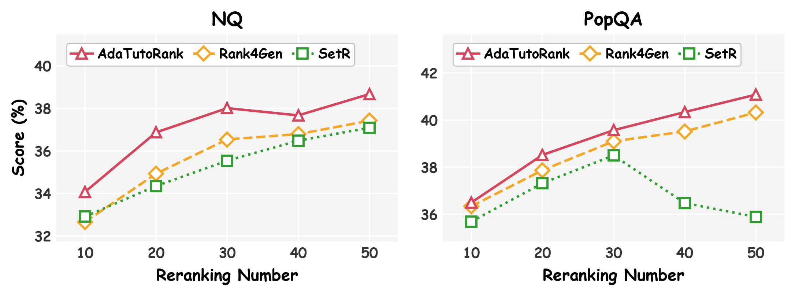
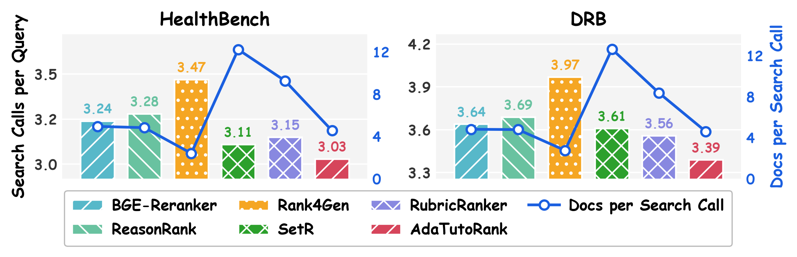
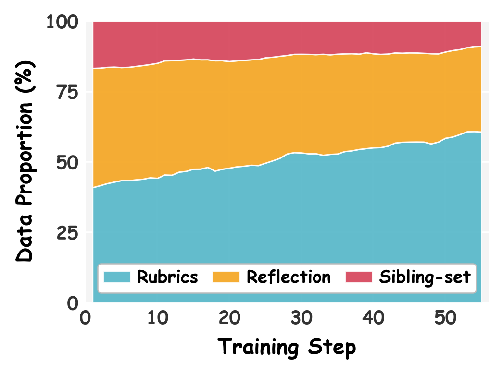
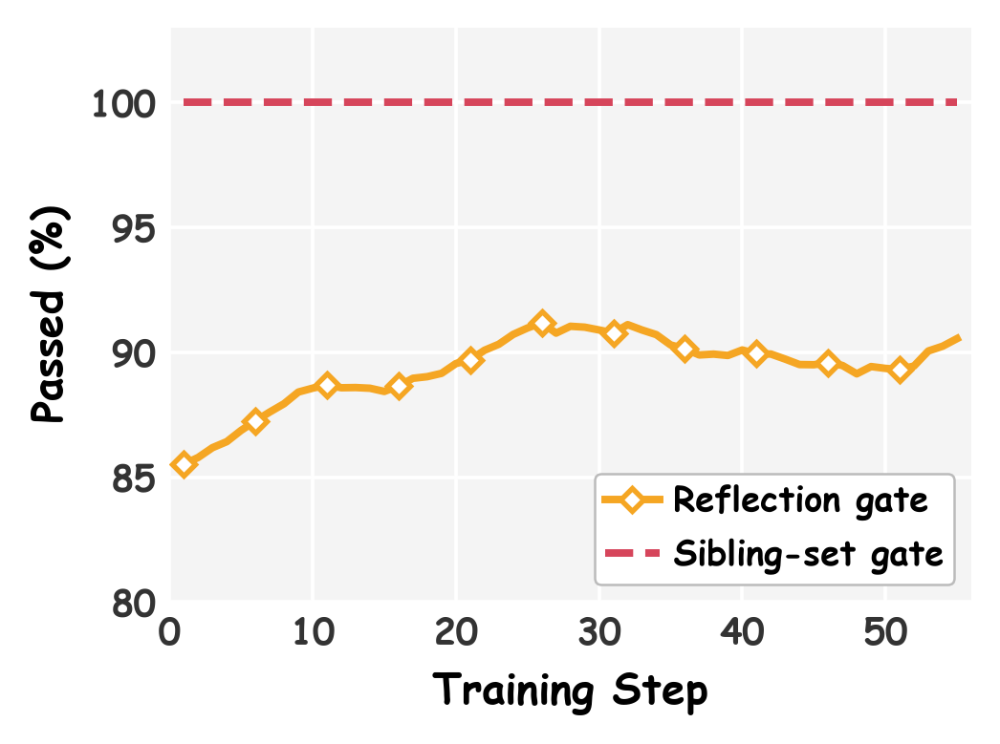
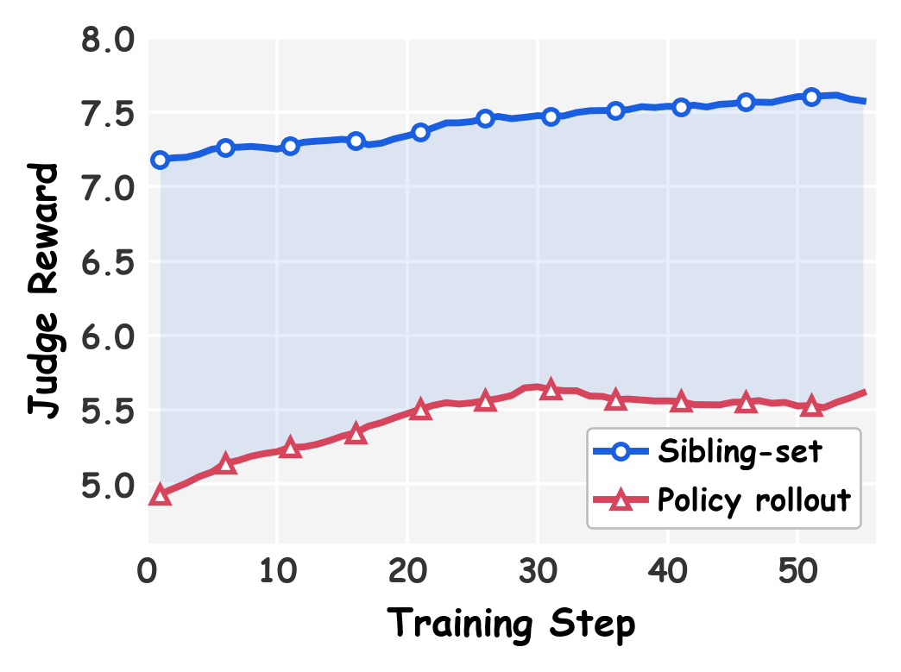

AdaTutoRank: Learning to Rerank Document Sets via Adaptive Tutoring Optimization for RAG and Deep Research

(i) Relevance-based reranking returns individually on-topic documents whose set is superficially relevant, redundant, and incomplete. (ii) AdaTutoRank instead selects a set that is genuinely relevant, complementary, and comprehensive, while consistently performing best on RAG, deep research, and setwise evaluation.
Abstract
Document rerankers determine what evidence reaches the downstream model in RAG and deep research, yet mainstream rerankers select by relevance matching, and individually relevant documents rarely constitute the complete, complementary, non-redundant set a complex information need demands. Prior work rewards a set by its aggregate rubric score, shifting the objective from ranking documents to composing sets. Yet that score is one scalar shared by every document in the set, so the supervision is sparse: a redundant document is rewarded with the rest whenever the set scores well, and a decisive one penalized with the rest whenever it does not; credit assignment leaves contributors indistinguishable from free riders. On-policy distillation could densify this supervision, but existing methods give every rollout the same fixed guidance, too prescriptive for strong rollouts and too abstract for weak ones.
We therefore propose AdaTutoRank, a setwise reranker trained with Adaptive Tutoring Optimization (ATO) under a three-level hierarchy of nine rubric dimensions, which supplies silver labels for the cold start, rewards for reinforcement learning, and hints for distillation. ATO draws three hint forms of increasing specificity from the policy's own frozen snapshot: the rubrics alone, a self-selector's sibling-set chosen under rubrics, and a self-reflector's reflection contrasting the rollout with that sibling-set; each rollout receives the form matched to its quality. Re-scoring that rollout under the hint-conditioned frozen teacher and the hint-free snapshot distills the hint's effect into a token-level advantage that complements the group-relative outcome advantage. Across ten benchmarks spanning RAG, deep research, and setwise evaluation, AdaTutoRank attains the best overall performance while issuing fewer retrieval calls.
(+1.44 over the best baseline)
(+2.17 over the best baseline)
(second on the other two)
rerankers in a research agent
🧭 Rubrics: Three Levels, Nine Dimensions
A relevance score cannot say whether a set is any good. We represent set-level utility as query-specific rubrics over a three-level hierarchy, and carry the same rubrics through the entire pipeline: they produce the silver labels for the cold start, the scalar reward for reinforcement learning, and the privileged information for distillation.
Document Level
- Relevance — does it answer the query rather than merely match its topic?
- Authenticity — is the content trustworthy and properly sourced?
- Quality — is it well-formed and informative enough to use?
Set Level
- Complementarity — does each document add something the others lack?
- Redundancy — do documents restate the same point and waste context?
- Conflict — do they contradict one another?
Global Level
- Completeness — are all facets of the information need covered?
- Density — is the evidence concentrated rather than diluted?
- Reachability — can the answer actually be derived from the set?
⚙️ Method

Stage 1 (Setwise SFT) generates silver labels from query-specific rubrics and fine-tunes the policy into a cold start for set selection. Stage 2 (Adaptive Tutoring Optimization) routes to each rollout a hint matched to its reward, and re-scoring the rollout with and without that hint yields a dense advantage complementing the group-relative outcome signal.
Adaptive hint routing
Rollouts fail for different reasons and can absorb different amounts of correction, so a single fixed form of privileged information serves none of them well. At every step the frozen snapshot acts as its own teacher and produces a hint whose specificity is matched to the rollout's reward \(r_i\), with thresholds \(\tau_1 = 6\) and \(\tau_2 = 3\) on the judge's 0–10 scale.
Rubrics only
The set is already good, so the hint states the criteria alone and asks for closer conformance. A more prescriptive hint would override choices that are already valid.
Corrective reflection
A self-reflector contrasts the rollout with the sibling-set and diagnoses which documents were wrongly retained and which were missed, giving a concrete revision to apply.
Sibling-set
A badly wrong rollout has no foothold for abstract criteria, so a self-selector's set chosen under the rubrics is handed over directly as a reference to learn from.
A judge gate protects the weaker bands: the sibling-set is delivered only when it outscores the rollout it supervises, otherwise the rollout falls back to rubrics-only, so no hint ever teaches toward a worse reference. Re-scoring the rollout under the hint-conditioned teacher and the hint-free snapshot turns the hint's effect into a token-level advantage, combined with the group-relative outcome advantage at \(\lambda = 0.7\). Hints and query-specific rubrics are used only during training; at inference the policy sees only the query, the meta-rubric, and the candidates.
📊 Main Results
We evaluate at two granularities. Answer-level results show whether the downstream task improves, but confound the generator with the evidence it receives; setwise-level results isolate the evidence itself. All rerankers operate on the same top-20 candidates and return a set.
Answer-level performance
| Ranker | RAG (exact match) | Deep Research (LLM judge) | Overall | |||||||||
|---|---|---|---|---|---|---|---|---|---|---|---|---|
| Avg. | NQ | Triv | PopQA | 2Wiki | Bambo | Avg. | WebW | HealthB | DRB | RQA | ||
| Only Retrieval (BM25 & Google Search API) | ||||||||||||
| Initial Retrieval | 31.95 | 28.45 | 60.05 | 32.72 | 27.35 | 11.20 | 47.98 | 32.00 | 45.40 | 48.62 | 65.89 | 39.08 |
| Adhoc Reranking | ||||||||||||
| BGE-RerankerL. | 35.16 | 32.94 | 62.80 | 35.85 | 29.82 | 14.40 | 51.01 | 42.00 | 45.60 | 48.84 | 67.59 | 42.20 |
| MonoT5 (3B) | 34.42 | 31.25 | 62.38 | 35.19 | 28.87 | 14.40 | 49.73 | 39.00 | 44.09 | 48.01 | 67.81 | 41.22 |
| RankT5 (3B) | 34.13 | 31.75 | 62.34 | 35.47 | 29.07 | 12.00 | 49.70 | 40.00 | 43.57 | 48.15 | 67.07 | 41.05 |
| RankLlama (7B) | 33.77 | 32.38 | 62.17 | 35.40 | 29.32 | 9.60 | 49.55 | 36.00 | 46.44 | 48.35 | 67.39 | 40.78 |
| RankVicuna (7B) | 34.61 | 32.58 | 61.85 | 35.10 | 28.30 | 15.20 | 50.34 | 35.00 | 46.92 | 48.39 | 71.04 | 41.60 |
| RankZephyr (7B) | 34.89 | 33.68 | 62.19 | 35.32 | 28.08 | 15.20 | 50.55 | 41.00 | 44.80 | 47.91 | 68.48 | 41.85 |
| Reasoning-Enhanced Reranking | ||||||||||||
| Rearank (7B) | 35.11 | 32.41 | 62.31 | 35.31 | 30.32 | 15.20 | 49.16 | 36.00 | 44.70 | 47.64 | 68.29 | 41.35 |
| ReasonRank (7B) | 34.98 | 33.02 | 62.09 | 35.49 | 30.72 | 13.60 | 48.83 | 37.00 | 43.00 | 48.12 | 67.18 | 41.14 |
| Setwise Reranking | ||||||||||||
| Rank4Gen (8B) | 37.00 | 34.93 | 65.76 | 37.87 | 31.23 | 15.20 | 49.26 | 37.00 | 46.60 | 48.15 | 65.30 | 42.45 |
| SetR (8B) | 36.87 | 34.35 | 65.64 | 37.32 | 31.85 | 15.20 | 50.96 | 40.00 | 46.00 | 49.31 | 68.54 | 43.13 |
| RubricRanker (8B) | 38.25 | 35.68 | 66.30 | 37.65 | 31.61 | 20.00 | 50.83 | 37.00 | 45.90 | 49.95 | 70.48 | 43.84 |
| AdaTutoRank (8B) | 39.05 | 36.87 | 66.54 | 38.52 | 32.52 | 20.80 | 53.06 | 41.00 | 48.57 | 49.89 | 72.78 | 45.28 |
Best and second-best results are highlighted; all metrics are higher-is-better. AdaTutoRank reaches an overall score of 45.28, exceeding the strongest baseline RubricRanker by 1.44 and Initial Retrieval by 6.20, ranking first on seven of the nine benchmarks and second on the remaining two. The gain is larger in deep research (+2.05) than in RAG (+0.80): in RAG the reranker runs once, whereas in deep research each set becomes the observation for the next sub-query, so better evidence compounds over the trajectory.
Setwise-level performance on SetwiseEvalKit
| Ranker | Doc-Level | Set-Level | Global-Level | Overall | |||||||||
|---|---|---|---|---|---|---|---|---|---|---|---|---|---|
| Avg | Rel. | Aut. | Qua. | Avg | Cmp. | Red. | Con. | Avg | Cpl. | Den. | Rea. | ||
| Initial Retrieval | 16.30 | 14.67 | 17.18 | 17.05 | 60.91 | 18.29 | 71.57 | 92.88 | 32.08 | 46.59 | 20.05 | 29.60 | 36.43 |
| BGE-RerankerL. | 20.30 | 18.89 | 21.32 | 20.70 | 63.05 | 28.04 | 67.86 | 93.26 | 38.34 | 54.35 | 21.03 | 39.64 | 40.57 |
| MonoT5 (3B) | 19.90 | 19.00 | 20.35 | 20.36 | 62.76 | 26.92 | 68.74 | 92.61 | 38.17 | 53.97 | 21.29 | 39.26 | 40.28 |
| RankT5 (3B) | 20.12 | 19.47 | 20.43 | 20.47 | 62.86 | 26.86 | 68.61 | 93.12 | 37.97 | 54.08 | 21.17 | 38.67 | 40.32 |
| RankLlama (7B) | 19.63 | 19.13 | 19.94 | 19.81 | 63.08 | 26.07 | 69.51 | 93.66 | 37.38 | 53.46 | 20.75 | 37.94 | 40.03 |
| Rearank (7B) | 19.28 | 18.47 | 19.93 | 19.44 | 63.34 | 26.24 | 70.23 | 93.55 | 38.00 | 53.83 | 20.99 | 39.17 | 40.21 |
| ReasonRank (7B) | 19.23 | 18.59 | 19.88 | 19.23 | 64.99 | 27.90 | 72.52 | 94.54 | 38.82 | 54.62 | 21.39 | 40.45 | 41.01 |
| Rank4Gen (8B) | 25.85 | 25.07 | 26.08 | 26.39 | 67.65 | 28.04 | 80.41 | 94.49 | 38.12 | 54.01 | 21.99 | 38.37 | 43.87 |
| SetR (8B) | 33.44 | 29.98 | 35.57 | 34.77 | 64.04 | 27.82 | 71.41 | 92.88 | 40.08 | 55.35 | 24.62 | 40.28 | 45.85 |
| RubricRanker (8B) | 36.15 | 33.69 | 38.07 | 36.69 | 63.31 | 28.25 | 65.10 | 96.58 | 40.96 | 56.25 | 24.97 | 41.65 | 46.80 |
| AdaTutoRank (8B) | 36.59 | 39.55 | 33.25 | 36.98 | 69.28 | 28.72 | 81.49 | 97.64 | 41.04 | 56.93 | 25.32 | 40.88 | 48.97 |
Short-form scenario. AdaTutoRank attains the highest average at all three rubric levels, ranks first on seven of the nine fine-grained dimensions, and lifts the overall score by 2.17 over RubricRanker. Since these sets are exactly what the generator and the agent consume, the answer-level gains above trace to the evidence rather than to its consumer.
🔬 Ablation
| Setting | NQ | PopQA | HealthB | RQA | Overall |
|---|---|---|---|---|---|
| AdaTutoRank | 36.87 | 38.52 | 48.57 | 72.78 | 49.19 |
| Training Stage | |||||
| w/o ATO | 36.45 | 38.25 | 40.96 | 69.67 | 46.33 |
| w/o SFT | 34.79 | 38.45 | 45.24 | 69.67 | 47.04 |
| Advantage Superposition | |||||
| Only RL | 31.88 | 36.23 | 46.11 | 66.06 | 45.07 |
| Only Distillation | 36.43 | 38.39 | 46.38 | 69.95 | 47.79 |
| Interpolation Coefficient | |||||
| \(\lambda = 0.9\) | 33.16 | 36.17 | 47.42 | 69.71 | 46.61 |
| \(\lambda = 0.5\) | 36.70 | 38.47 | 45.82 | 70.00 | 47.75 |
| Privileged Information | |||||
| Only Rubrics | 36.51 | 38.43 | 47.20 | 67.78 | 47.48 |
| Only Reflection | 35.60 | 37.77 | 47.36 | 69.77 | 47.62 |
| Only Sibling-Set | 35.82 | 38.22 | 43.11 | 70.36 | 46.88 |
Reported on a four-benchmark subset, so the Overall column is not comparable to the main table above. Four readings: the two stages are complementary rather than substitutable, since removing either costs a similar amount; the outcome advantage alone (45.07) falls below SFT alone (46.33), showing a scalar reward shared by every selected identifier is too coarse; performance degrades on both sides of \(\lambda=0.7\), each end collapsing toward the corresponding single-signal regime; and fixing the hint to any single form loses ground, because abstract rubrics give a badly wrong rollout no foothold while a sibling-set overrides the valid choices of a strong one.
📈 Analysis

Robust to the candidate pool size. AdaTutoRank stays strongest as the pool grows from 10 to 50. On TriviaQA performance rises steadily with pool size; on WebWalkerQA all rerankers peak at 30 and decline after, which implicates the retrieval source rather than the reranker — web results for agent-issued sub-queries carry a long tail of low-value pages that inflate context without adding evidence.

More efficient inside a search agent. AdaTutoRank incurs the fewest search calls on both deep research benchmarks while selecting fewer documents per round. Its sets are therefore both sufficient and compact: the agent meets its information need without issuing extra queries.


The same two trends hold on the remaining benchmarks. Left: performance across candidate pool sizes on NQ and PopQA. Right: search calls per query and documents per search call on HealthBench and DRB.
Training dynamics of adaptive tutoring



As the policy improves, the mix of hints it receives shifts on its own from concrete sibling-sets toward abstract rubrics, and the gate admits the sibling-set less and less often — the curriculum is induced by the reward rather than scheduled by hand.
📦 Resources
We release the full training data for both stages, along with the rubric trees that drive them.
| Resource | Size | Contents |
|---|---|---|
AdaTutoRank-Train-Data
(sft) |
8,958 | Rubric-conditioned silver labels for the Stage 1 cold start |
AdaTutoRank-Train-Data
(ato) |
3,557 / 100 | Stage 2 train / validation queries, each with its candidate pool and full nine-dimension rubric tree |
| SetwiseEvalKit | — | Rubric-based benchmark scoring a document set along the nine dimensions |
from datasets import load_dataset
sft = load_dataset("kailinjiang/AdaTutoRank-Train-Data", "sft", split="train")
ato_train = load_dataset("kailinjiang/AdaTutoRank-Train-Data", "ato", split="train")
ato_val = load_dataset("kailinjiang/AdaTutoRank-Train-Data", "ato", split="validation")BibTeX
@article{jiang2026adatutorank,
title = {AdaTutoRank: Learning to Rerank Document Sets via Adaptive Tutoring Optimization for RAG and Deep Research},
author = {Jiang, Kailin and Liu, Lei and Xi, Jian and Chen, Yangqi and Xu, Hui and
Zhao, Hongwei and Li, Bin and Lu, Yu and Shi, Haibo},
year = {2026}
}